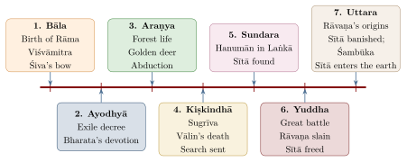

Chapter 3: The Seven Kāṇḍas of the Rāmāyaṇa¶
rāmo vigrahavān dharmaḥ sādhuḥ satyaparākramaḥ /
rājā sarvasya lokasya devānām iva vāsavaḥ //
“Rāma is dharma embodied, good, of true valour; king of all the world, as Vāsava (Indra) is of the gods.”
— Mārīca to Rāvaṇa, Rāmāyaṇa 3.35.13 (Critical Edition)
The journey of Rāma as narrated in the Vālmīki Rāmāyaṇa unfolds across seven books called Kāṇḍas. The word kāṇḍa means “section,” “chapter,” or more literally “stalk” or “joint” — suggesting that each Kāṇḍa is a distinct joint in the larger bamboo stalk of the narrative. Together, these seven Kāṇḍas trace an arc from cosmic joy (the birth of Rāma) through the depths of sorrow (the abduction of Sītā) to the triumph of dharma (the defeat of Rāvaṇa) and the complex aftermath of return (Figure 3.1).

3.1 Bāla Kāṇḍa: The Book of Childhood¶
3.1.1 Overview¶
The Bāla Kāṇḍa (“Book of the Child”) has 77 sargas in the southern vulgate (76 in the Critical Edition). It functions both as a prologue to the main narrative and as an account of Rāma’s birth and youth. It also contains the krauñcavadha episode that occasions the composition of the poem — placing the act of creation within the created work itself. Together with the Uttarakāṇḍa, it is generally regarded by scholars as a later frame added to the older core (Chapter 2).
3.1.2 Principal Episodes¶
-
The Sacrifice for Sons: King Daśaratha, longing for sons, performs a horse sacrifice and a rite for progeny with the help of the sage Ṛṣyaśṛṅga. A great being emerges from the sacrificial fire bearing a golden vessel of pāyasa (rice cooked in milk), which Daśaratha distributes among his three queens, Kausalyā, Kaikeyī and Sumitrā.
-
The Birth of the Four Princes: Rāma (born to Kausalyā on the ninth day of the month of Caitra, under the asterism Punarvasu), Bharata (to Kaikeyī), and the twins Lakṣmaṇa and Śatrughna (to Sumitrā).
-
Viśvāmitra’s Request: The sage Viśvāmitra takes Rāma and Lakṣmaṇa to protect his sacrifice from the Rākṣasas. Rāma kills the Rākṣasī Tāṭakā, overcoming his reluctance to kill a woman at the sage’s insistence, and drives off Mārīca.
-
Ahalyā’s Release: In Vālmīki, Ahalyā, cursed by her husband Gautama for her union with Indra, lives invisible in the hermitage, fasting and lying on ashes, until Rāma’s arrival releases her; she receives the princes as guests. The familiar version in which she has been turned to stone and is restored by the touch of Rāma’s foot belongs to later tradition (the Adhyātma Rāmāyaṇa, Tulsīdās). Ahalyā is one of the five women (pañcakanyā) remembered in a popular morning prayer.
-
The Bow at Mithilā: King Janaka has declared that his daughter Sītā, found in a furrow while the field was being ploughed, will be given only to a man who can string the great bow of Śiva — a “bride-price of valour” (vīryaśulka) rather than a choice by the bride. Rāma not only strings but breaks the bow, and the four brothers are married to Sītā, her sister Ūrmilā and their cousins.
3.2 Ayodhyā Kāṇḍa: The Book of Exile¶
3.2.1 Overview¶
The Ayodhyā Kāṇḍa (“Book of Ayodhyā”, 119 sargas in the southern vulgate, 111 in the Critical Edition) is the second-longest book of the poem and is widely regarded as its most searching treatment of dharma. It confronts the reader with conflicts of duty, loyalty and love within a royal family, and contains some of the epic’s most powerful speeches.
3.2.2 Principal Episodes and Dharmic Themes¶
-
Coronation Preparations: King Daśaratha, growing old, prepares to crown Rāma as Yuvarāja (heir-apparent). The city of Ayodhyā celebrates with great joy.
-
Kaikeyī’s Fatal Demands: Influenced by her scheming maid Mantharā, Queen Kaikeyī invokes two boons Daśaratha had long ago promised her: (1) Bharata to be crowned king, and (2) Rāma to be exiled for fourteen years.
-
Rāma’s Acceptance: Rāma, upon hearing the decree, accepts without a moment’s hesitation. This acceptance encapsulates the Rāmāyaṇa’s understanding of Dharma: a son’s duty to his father’s word supersedes personal happiness.
-
Lakṣmaṇa and Sītā Accompany Rāma: Despite Rāma’s protests, both Lakṣmaṇa and Sītā insist on accompanying him.
-
Bharata’s Devotion: Returning from his maternal grandfather’s home, Bharata discovers his father Daśaratha has died of grief. He refuses the throne and places Rāma’s pādukās (sandals) upon it, ruling as regent until Rāma’s return.
3.3 Araṇya Kāṇḍa: The Book of the Forest¶
3.3.1 Overview¶
The Araṇya Kāṇḍa (“Book of the Forest”, 75 sargas in the southern vulgate, 71 in the Critical Edition) covers Rāma’s life in the Daṇḍaka forest, his encounters with sages and Rākṣasas, and culminates in the central crisis of the epic: the abduction of Sītā by Rāvaṇa.
3.3.2 Principal Episodes¶
-
Among the Sages of Daṇḍaka: Rāma, Sītā and Lakṣmaṇa visit the hermitages of the sages Śarabhaṅga, Sutīkṣṇa and Agastya, and Rāma promises to protect the ascetics from the Rākṣasas — a promise Sītā questions, warning him against violence towards those who have not wronged him. After ten years they settle at Pañcavaṭī on the Godavarī.
-
Śūrpaṇakhā: Rāvaṇa’s sister Śūrpaṇakhā approaches Rāma and Lakṣmaṇa amorously and is mocked by both; when she attacks Sītā, Lakṣmaṇa, at Rāma’s command, cuts off her nose and ears. The episode, with its mockery and mutilation of a woman of the forest, has been sharply criticised by modern feminist and Dravidian readers.
-
Rāvaṇa’s Conspiracy: Rāvaṇa, after his armies under Khara and Dūṣaṇa have been destroyed, conspires with Mārīca, who takes the form of a golden deer to lure Rāma away.
-
The Abduction of Sītā: With Rāma and Lakṣmaṇa lured away, Rāvaṇa appears as a wandering ascetic and carries Sītā off. The old vulture Jaṭāyu fights Rāvaṇa to protect her and is mortally wounded. (The “line” drawn by Lakṣmaṇa around the hut, the Lakṣmaṇa rekhā, is a later addition not found in Vālmīki.)
-
Rāma’s Grief: Rāma laments Sītā’s absence and questions the trees and animals of the forest — a passage much imitated by later poets.
-
Kabandha and Śabarī: Rāma and Lakṣmaṇa free the monster Kabandha from a curse, and he directs them to Sugrīva. At the lake Pampā they are received by Śabarī, an aged female ascetic (śramaṇī) who had served the sages of Mataṅga’s hermitage; she honours Rāma with forest fruits and then ascends to heaven.
In Vālmīki, Śabarī is an ascetic whose name suggests origin among the Śabara forest people. Later devotional versions made her an exemplar of bhakti that transcends caste: the Adhyātma Rāmāyaṇa and Tulsīdās have Rāma declare that he values devotion above birth, and popular North Indian tradition adds the story that she tasted each berry before offering only the sweetest to Rāma — an act of ritual “pollution” that Rāma accepts with joy. The detail is not found in Vālmīki. Bhakti poets cited Śabarī as proof that love of God outweighs ritual purity, even as the same tradition left the social order largely intact.
3.4 Kiṣkindhā Kāṇḍa: The Book of Alliance¶
3.4.1 Overview¶
The Kiṣkindhā Kāṇḍa (67 sargas in the southern vulgate, 66 in the Critical Edition) is named after the Vānara kingdom of Kiṣkindhā, traditionally identified with the Hampi region of Karnataka. It narrates Rāma’s alliance with Sugrīva and sets in motion the search for Sītā.
3.4.2 Principal Episodes¶
-
Meeting Hanumān: Rāma and Lakṣmaṇa meet Hanumān, minister of the exiled Vānara prince Sugrīva. Rāma is struck by the correctness and eloquence of his speech.
-
Vālin and Sugrīva: Sugrīva had been driven from the kingdom by his elder brother Vālin, who had also taken Sugrīva’s wife Rumā. Rāma helps Sugrīva by shooting Vālin from hiding while the brothers fight (see below).
-
Sugrīva’s Pledge: In return, Sugrīva, now king, pledges his armies to the search for Sītā, though he delays until Lakṣmaṇa angrily reminds him of his promise.
-
The Rainy Season: Rāma spends the rains on Mount Prasravaṇa; his grief is set against celebrated descriptions of the monsoon and of autumn.
-
The Search Parties: Sugrīva dispatches search parties in the four directions, describing the geography of each quarter. The southern party, led by Aṅgada and including Hanumān and Jāmbavat, learns from the vulture Sampāti that Sītā is in Laṅkā.
The Killing of Vālin
The killing of Vālin from hiding has been debated since the commentators. The dying Vālin denounces Rāma at length for attacking a warrior engaged with another, who had done him no wrong. Rāma replies that the land belongs to the Ikṣvākus, so that he, acting for Bharata, may punish wrongdoers; that Vālin had taken his younger brother’s wife, a sin as grave as incest; and that, as a monkey, Vālin could be killed from concealment as kings hunt animals. Commentators such as Govindarāja elaborate these arguments and treat the episode as an instance of the “subtlety of dharma” (dharmasūkṣmatā), and theologians who regard Rāma as the Supreme Being hold that his acts are just by definition. Many readers, ancient and modern, have found the justifications unconvincing; they see in Vālin’s eloquent protest the poem’s own acknowledgment of moral ambiguity, a quality the Mahābhārata develops much further.
3.5 Sundara Kāṇḍa: The Beautiful Book¶
3.5.1 Overview¶
The Sundara Kāṇḍa (“Beautiful Book”, 68 sargas in the southern vulgate, 66 in the Critical Edition) is the most popular book of the Rāmāyaṇa for devotional recitation. It is devoted to Hanumān’s mission to Laṅkā: his leap across the ocean, his search for Sītā, his discovery of her in the Aśoka grove, his conversation with her, and his destruction of the grove and burning of the city.
The meaning of the title, “beautiful,” is uncertain. Popular explanations refer it to Hanumān’s deeds, to the long descriptions of Laṅkā and of the Aśoka grove where Sītā is held, or to the first good news after Sītā’s abduction, which makes the book auspicious to recite.
3.5.2 Principal Episodes¶
-
The Leap: Hanumān leaps across the ocean to Laṅkā, overcoming the tests of Surasā, mother of serpents, and the demoness Siṃhikā.
-
Searching Laṅkā: Hanumān searches the city of Laṅkā at night, and the poet describes its palaces, its women and its defences at length.
-
Finding Sītā: Hanumān locates Sītā in the Aśokavanikā, surrounded by guards and under tremendous pressure to accept Rāvaṇa’s advances. Her steadfast loyalty to Rāma in this extreme trial became, for the tradition, the supreme expression of the ideal of wifely devotion (pātivratya).
-
The Sign of Recognition: Hanumān presents Rāma’s ring as proof of his identity. Sītā gives Hanumān her cūḍāmaṇi (crest jewel) to carry back.
-
Destruction of the Grove: Hanumān wrecks the Aśoka grove and kills many of Rāvaṇa’s warriors, including his son Akṣa, before allowing himself to be captured by Indrajit.
-
Before Rāvaṇa: Brought before Rāvaṇa, Hanumān serves as an ambassador for Rāma, advising the demon king to return Sītā. His tail is set on fire as punishment.
-
Burning of Laṅkā: Hanumān sets the golden city of Laṅkā ablaze with his burning tail — the famous Laṅkā Dahan episode.
3.6 Yuddha Kāṇḍa: The Book of War¶
3.6.1 Overview¶
The Yuddha Kāṇḍa (“Book of War”, called Laṅkā Kāṇḍa in some versions) is the longest book (128 sargas in the southern vulgate, 116 in the Critical Edition). It narrates the war between Rāma’s Vānara army and Rāvaṇa’s Rākṣasas, culminating in the death of Rāvaṇa, Sītā’s ordeal and the return to Ayodhyā. See Table 3.1.
3.6.2 Major Episodes¶
| Episode | Dharmic Significance |
|---|---|
| Vibhīṣaṇa’s Surrender | Rāma accepts the enemy’s own brother as an ally despite his counsellors’ doubts; the model of protecting one who seeks refuge (śaraṇāgati) |
| Building of the Setu | The Vānaras, directed by Nala, build a causeway across the ocean after Rāma threatens the Ocean, who then appears and advises him |
| Vibhīṣaṇa’s Consecration | Rāma consecrates Vibhīṣaṇa as king of Laṅkā as soon as he accepts him |
| Death of Kumbhakarṇa | Rāvaṇa’s gigantic brother rebukes him for abducting Sītā but fights for him out of loyalty |
| Indrajit’s Sorcery | Rāvaṇa’s son Indrajit (Meghanāda) uses magical weapons to strike down Rāma and Lakṣmaṇa, who are revived by Garuḍa and by Hanumān’s mountain of herbs; Lakṣmaṇa finally kills him |
| Death of Rāvaṇa | After a long duel in which Rāvaṇa’s heads grow back as fast as they are cut off, Rāma kills him with a divine weapon given by Agastya |
| Sītā’s Ordeal | Rāma publicly repudiates Sītā; she enters a fire, and Agni restores her unharmed |
| Return to Ayodhyā | The return in the aerial car Puṣpaka; reunion with Bharata; coronation |
3.6.3 Sītā’s Ordeal by Fire¶
The episode of Sītā’s ordeal by fire (later called the agniparīkṣā) is among the most debated in the epic. In Vālmīki’s account, Rāma receives Sītā after Rāvaṇa’s death in front of the assembled army and tells her that he fought to avenge the insult to his own honour and lineage, not for her sake; that a woman who has lived in another man’s house cannot be taken back; and that she is free to go wherever she likes, even to Lakṣmaṇa or Vibhīṣaṇa. Sītā answers him with dignity and reproach — he speaks, she says, like a common man to a common woman — and asks Lakṣmaṇa to build a pyre. She enters the fire, the gods appear and reveal Rāma’s divinity, and Agni returns Sītā unharmed, declaring her innocence. Rāma then says that he had never doubted her, but that the test was needed to convince the world.
Interpretations divide sharply:
-
Traditional justifications: Rāma as king was bound by public opinion (lokāpavāda); the ordeal was meant to prove Sītā’s purity beyond doubt for her own sake; and, in devotional readings, the whole episode is divine play. The Adhyātma Rāmāyaṇa and Tulsīdās remove much of the sting by having the real Sītā enter the fire for safekeeping before the abduction, so that the ordeal merely retrieves her from Agni and dismisses an illusory double.
-
Literary and textual readings: Several scholars regard the scene, with its revelation of Rāma’s divinity, as belonging to a later layer of the Yuddhakāṇḍa, and many later poets softened or omitted it. Bhavabhūti’s Uttararāmacarita (8th century) is among the earliest works to place Sītā’s suffering, and Rāma’s guilt, at the centre.
-
Feminist and popular criticism: Modern feminist scholars have read the ordeal and the later banishment as expressions of the epic’s control of female sexuality, and studies of audiences show that ordinary listeners, too, have long been troubled by them. Linda Hess has documented the range of Indian responses to “the ideal man’s cruel treatment of his ideal wife,” from defensive explanation to outright rejection; women’s songs in many languages take Sītā’s side against Rāma (Hess 1999; Sutherland 1989; Narayana Rao 1991).
These readings need not be reconciled. The tradition itself, from Vālmīki’s own Uttarakāṇḍa — where Sītā finally refuses a second ordeal — to Bhavabhūti and the women’s songs, has been arguing with Rāma about Sītā for two thousand years (see Chapter 10).
3.7 Uttara Kāṇḍa: The Final Book¶
3.7.1 Overview and Textual Status¶
The Uttara Kāṇḍa (“Later Book”, 111 sargas in the southern vulgate, 100 in the Critical Edition) has a distinct textual history. Most scholars, following Jacobi, consider it, like much of the Bālakāṇḍa, an addition to the older core of Books 2–6, noting differences in style, the treatment of characters and the prominence of Rāma’s divinity. It is nevertheless present in both recensions and is included in the Baroda Critical Edition, and it has been an integral part of the received tradition for many centuries. Its first part narrates the earlier history of Rāvaṇa and of Hanumān; its second part, the later life of Rāma.
3.7.2 Principal Episodes¶
-
Rāmarājya: Rāma’s rule is described (here and at the end of the Yuddhakāṇḍa) as a golden age of justice and prosperity. The ideal of Rāmrājya was invoked by Gandhi as a vision of just and non-violent self-government.
-
Sītā’s Banishment: Learning that subjects question Sītā’s virtue, Rāma sends her into the forest despite her pregnancy. She takes shelter in Vālmīki’s aśrama.
-
Birth of Lava and Kuśa: Sītā gives birth to twin sons, Lava and Kuśa, who are raised by Vālmīki himself. The poem thus contains its own author, who raises Rāma’s sons and teaches them the Rāmāyaṇa.
-
Śambūka: While Sītā lives in exile, a brahmin’s young son dies and the brahmin blames the king. Nārada explains that a Śūdra is practising austerities in Rāma’s kingdom, contrary to the order of the age. Rāma searches, finds the ascetic Śambūka performing penance, and, on learning that he is a Śūdra seeking to reach heaven in his body, beheads him; the gods praise Rāma and the boy revives.
-
Lava-Kuśa Sing the Rāmāyaṇa: At Rāma’s horse sacrifice (aśvamedha), the twin boys sing the Rāmāyaṇa before Rāma without knowing he is their father. Rāma recognises them.
-
Sītā’s Final Departure: Brought before the assembly to swear her purity once more, Sītā instead calls on the Earth, her mother, to receive her. The earth opens and Sītā descends, leaving Rāma bereft.
-
Rāma’s Departure: After distributing the kingdom among his sons and nephews, Rāma walks into the river Sarayū, followed by the people of Ayodhyā, and returns to heaven as Viṣṇu.
Sītā’s Oath — Uttarakāṇḍa 7.88.10 (Critical Edition)
yathāhaṃ rāghavād anyaṃ manasāpi na cintaye /
tathā me mādhavī devī vivaraṃ dātum arhati //
Translation:
“As I have never, even in my mind, thought of anyone but Rāghava,
so may the goddess Mādhavī (the Earth) grant me an opening.”
3.7.3 The Tragic Depth of the Uttara Kāṇḍa¶
The Uttara Kāṇḍa transforms the Rāmāyaṇa from a triumphant epic into something far more troubling. Rāma, who upholds royal dharma to its utmost, ends bereft of his wife; the cost of that dharma, however, falls first and most heavily on Sītā. This tragic dimension — often omitted in popular retellings that end with the jubilant return to Ayodhyā, and avoided altogether by Tulsīdās, whose Mānas does not narrate the banishment — is essential to the Rāmāyaṇa as Vālmīki’s tradition transmitted it.
3.7.4 Śambūka and the Question of Caste¶
No episode of the Rāmāyaṇa has been more sharply contested in modern India than the killing of Śambūka. In Vālmīki’s Uttarakāṇḍa the logic is explicit: austerity is the prerogative of the higher varṇas in the Tretā age, a Śūdra’s penance disturbs the cosmic order and causes the death of a brahmin child, and the ideal king restores order by executing him. The episode thus shows Rāma enforcing the hierarchy that the Dharmaśāstras prescribe, and it cannot honestly be explained away.
Pre-modern authors were already uneasy. Bhavabhūti, in the second act of the Uttararāmacarita, has Rāma strike the blow with reluctance and self-reproach, and Śambūka is immediately released into a divine form, grateful for the death that has freed him. Devotional traditions likewise turned the execution into a liberation. In the modern period the episode became a focus of anti-caste criticism. B. R. Ambedkar cited it as evidence that Rāma’s kingship enforced the subordination of the Śūdras; E. V. Ramasamy (Periyar) and the Dravidian movement made it a centrepiece of their attack on the epic; and the Kannada poet Kuvempu’s play Śūdra Tapasvi (1944) reimagined the encounter so as to vindicate the Śūdra ascetic. Dalit writers continue to read Śambūka, together with Ekalavya in the Mahābhārata, as an emblem of the denial of knowledge to the low-born (Ambedkar 1987; Richman 2001).
A balanced account must hold both facts together: that the Rāmāyaṇa has been for many Hindus the supreme model of righteous rule and loving devotion, and that its normative world, like that of the Dharmaśāstras of the same period, was one in which birth determined access to religious knowledge, and in which the king’s duty included enforcing that order.
3.8 Conflicts of Duty Across the Kāṇḍas¶
Commentators have found a conflict of duties in almost every book. Daśaratha must choose between his love for his young sons and the claim of a sage who asks for them; Rāma, between his father’s word, extorted by Kaikeyī, and his own right to the throne; Rāma again, between Sītā’s wish for the golden deer and the prudence that suspects a trap; Hanumān, between rescuing Sītā himself and leaving the deed to Rāma, as she asks. The three hardest cases — Vālin, the ordeal and the banishment with Śambūka — are discussed above. Chapter 9 considers how the epics’ hard cases have been read.
3.9 The Rāmāyaṇa’s Influence on Sanskrit Kāvya¶
Vālmīki’s Rāmāyaṇa served as a model for later Sanskrit mahākāvya (courtly epic), and supplied the plot of Kālidāsa’s Raghuvaṃśa and of many later poems. When the poetician Daṇḍin defined the mahākāvya in his Kāvyādarśa (c. 700 CE), several of the features he listed were already present in the Rāmāyaṇa (Table 3.2):
| Feature | Manifestation in the Rāmāyaṇa |
|---|---|
| Noble hero (Dhīra Nāyaka) | Rāma as the ideal man of noble birth and character |
| Multiple Rasas | Karuṇa as primary, with Vīra, Adbhuta, Śṛṅgāra as subsidiary |
| Descriptions of seasons | The descriptions of the seasons (ṛtuvarṇana) in the Kiṣkindhā and Araṇya Kāṇḍas |
| Descriptions of cities | Ayodhyā and Laṅkā described in elaborate detail |
| Battle descriptions | The entire Yuddha Kāṇḍa |
| Sunrise and sunset | Multiple examples throughout all Kāṇḍas |
| Moral conclusion | The triumph of Dharma and the tragedy of the Uttara Kāṇḍa |
3.10 Allegorical Readings of the Rāmāyaṇa¶
Devotional and Vedāntic readers have often read the Rāmāyaṇa as an allegory of the inner life, in addition to its literal sense. The Adhyātma Rāmāyaṇa (“Spiritual Rāmāyaṇa,” c. 14th–15th century), which presents Rāma as the supreme Brahman of Advaita Vedānta, set the pattern for such readings. Modern spiritual teachers have developed them further, mapping the characters onto faculties of the person.
The Traditional View: The Inner Rāmāyaṇa
A common modern allegorical reading takes Rāma as the Self (ātman), Sītā as the individual soul or the mind’s devotion, Lakṣmaṇa as watchful discipline, Hanumān as devotion and breath, Laṅkā as the body bound by desire, and Rāvaṇa as egoism (ahaṅkāra). Such mappings vary from teacher to teacher; they are interpretations layered on the epic, not part of Vālmīki’s text, but they show how the narrative continues to serve as a map of the spiritual journey for many readers.
3.11 Poetic Artistry: Vālmīki’s Literary Techniques¶
Vālmīki’s narrative art — his handling of dialogue, his control of pace, and his descriptions of nature — is as important to the poem’s survival as its religious authority. He adapts his method to each book: description of cities and courts in the Bāla and Ayodhyā books, dramatic dialogue in the crisis of the exile, nature poetry in the forest books, suspense in Hanumān’s night search of Laṅkā, and extended battle narrative, with chains of similes and hyperbole, in the Yuddhakāṇḍa. His similes draw on the whole natural world and on ritual and royal life; the saying upamā Kālidāsasya, “simile belongs to Kālidāsa,” gives the palm for simile to the later poet, but later poets drew constantly on Vālmīki’s stock of comparisons.
3.11.1 The Role of Nature in the Rāmāyaṇa¶
In Vālmīki’s poem the landscape takes part in the emotional life of the characters. Citrakūṭa, where the exiles first settle, is a sanctuary whose harmony mirrors a righteous life; at Pampā lake the beauty of spring sharpens Rāma’s grief for the absent Sītā by contrast; the Aśoka grove in Laṅkā is a garden that serves as a prison; and the ocean is the obstacle that Rāma must threaten before its god will let him cross.
Scholarly Note: The Seasonal Descriptions (Ṛtuvarṇana)
The Kiṣkindhā Kāṇḍa contains celebrated descriptions of the rainy season and of autumn. Rāma, waiting for the monsoon to end so that the search for Sītā can begin, observes the rains with an intensity of perception born of separation. These passages became models for later seasonal descriptions (ṛtuvarṇana) in Sanskrit poetry, including the Ṛtusaṃhāra attributed to Kālidāsa and the seasonal cantos of later mahākāvyas.
3.12 The Concept of Maryādā Across the Kāṇḍas¶
The later epithet of Rāma, Maryādā Puruṣottama, “the supreme person who keeps within the bounds,” expresses the tradition’s view that his life sets the standard of proper conduct (maryādā). Traditional readers find a different dimension of that standard in each book: humility before his teacher in the Bāla, obedience to a father’s word in the Ayodhyā, the protection of ascetics in the Araṇya, loyalty to a friend in the Kiṣkindhā, the conduct of a true envoy (through Hanumān) in the Sundara, honour towards a defeated enemy in the Yuddha, and in the Uttara the king’s placing of his subjects’ opinion above his own happiness — the point at which modern critics observe that it is Sītā, not Rāma, who pays.
3.13 The Rāmāyaṇa’s Influence on Later Sanskrit Drama¶
The Rāmāyaṇa provided the plots of many Sanskrit plays. Two plays based on it, the Pratimānāṭaka (on the Ayodhyā Kāṇḍa) and the Abhiṣekanāṭaka (on the Kiṣkindhā–Yuddha books), are among the “Trivandrum plays” attributed to Bhāsa (perhaps c. 2nd–4th century CE; the attribution is debated). Bhavabhūti’s Mahāvīracarita and Uttararāmacarita (early 8th century CE) are among the finest Sanskrit dramas; the latter follows Rāma’s remorse and Sītā’s suffering after the banishment and ends, unlike Vālmīki, in their reunion. These plays are discussed as drama in Volume 8, Kāvya Kalpalatā. See Table 3.3.
| Playwright | Period | Play | Kāṇḍa Source and Theme |
|---|---|---|---|
| Bhāsa (attrib.) | c. 2nd–4th c. CE | Pratimānāṭaka | Ayodhyā Kāṇḍa; Bharata’s devotion and the sandals |
| Bhāsa (attrib.) | c. 2nd–4th c. CE | Abhiṣekanāṭaka | Kiṣkindhā to Yuddha; the war and Rāma’s coronation |
| Bhavabhūti | early 8th c. CE | Mahāvīracarita | Bāla to Yuddha Kāṇḍas; Rāma as heroic protagonist |
| Bhavabhūti | early 8th c. CE | Uttararāmacarita | Uttara Kāṇḍa; Sītā’s banishment, ending in reconciliation |
| Murāri | c. 9th–10th c. CE | Anargharāghava | The whole story, in a highly ornate style |
| Rājaśekhara | 10th c. CE | Bālarāmāyaṇa | The whole story in ten acts |
3.14 Conclusion¶
The seven books move from birth and youth through loss, war and return to the sorrow of the Uttarakāṇḍa, where royal duty costs Rāma his wife and costs Sītā far more. The episodes that have troubled readers most — Vālin, Sītā’s ordeal and banishment, Śambūka — are not marginal to the poem’s idea of dharma but part of it, and the long history of retelling, defending and contesting them is part of the poem’s life.